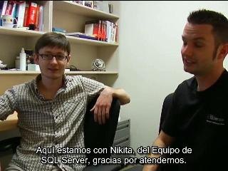
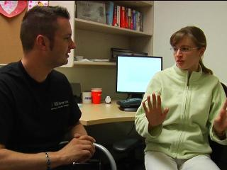
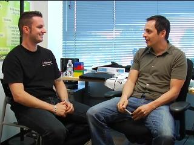
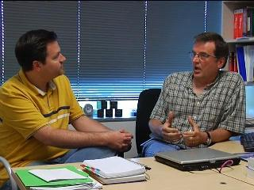

Channel 9 Blog for Zach Skyles Owens
Extending SQL Server Data to the Cloud using SQL Azure Data Sync[WMV] [0:06:22] [2010/07/17]In this first of a 3 part webcast series, I will show you how SQL Azure Data Sync enables on-premises SQL Server data to be easily shared with SQL Azure allowing you to extend your on-premises data to…
Using SQL Azure Data Sync Service to provide Geo-Replication of SQL Azure databases[WMV] [0:06:45] [2010/07/17]In this second of a 3 part webcast series, I introduce you to the Data Sync Service for SQL Azure. This service extends on the SQL Azure Data Sync tools’ ability to provide symmetry between SQL…
SQL Server Express: Easy to Manage[WMV] [0:10:09] [2009/09/22]
In this screencast Roger Doherty and Zach Skyles Owens quickly run through the SQL Server Management Studio and show some of the basic functionality of managing SQL Server Express databases such as…
SQL Server Express: Overview[WMV] [0:21:20] [2009/09/22]
In this series Roger Doherty and Zach Skyles Owens will be exploring the SQL Server Express product and its role in the Microsoft data platform. Many people don’t realize that:
SQL Server…
The Future of SQL Data Services with Nigel Ellis[WMV] [0:56:32] [2009/04/28]
I had the pleasure of sitting down with one of SQL Server’s brightest, Nigel Ellis, to discuss the future direction of SQL Data Services. Nigel goes deep on the changes of SDS. If you want to…
SQL Server 2008 - SharePoint Server [WMV] [0:09:07] [2008/12/27]マイクロソフト デベロッパーエバンジェリストの小高です。
SQL Server 2008について達人と呼ばれる人たちにインタビューを行うシリーズ物のビデオです。今回はSharePoint ServerにおけるSQL Server 2008 の対応と開発について、マイクロソフトのデベロッパーエバンジェリストであり、SharePoint…
SQL Server 2008 - Visual Studio [WMV] [0:04:39] [2008/12/27]マイクロソフト デベロッパーエバンジェリストの小高です。
SQL Server2008について達人と呼ばれる人たちにインタビューを行うシリーズ物のビデオです。今回はVisualStudio2008におけるSQL Server 2008 の対応と開発について、マイクロソフトでVisual Studioの製品を担当している近藤に話を聞きました。
4分39秒のビデオです。
SQL Server 2008 - SQL Server Data Services[WMV] [0:05:33] [2008/12/27]マイクロソフト・デベロッパーエバンジェリストの小高です。
SQL Server2008について達人と呼ばれる人たちにインタビューを行うシリーズ物のビデオです。今回はSQL Server Data ServicesについてマイクロソフトでSQL Serverの製品を担当している太田に話を聞きました。
5分33秒のビデオになります。
SQL Server 2008 - TransactSQL [WMV] [0:07:26] [2008/12/27]マイクロソフト・デベロッパーエバンジェリストの小高です。
SQL Server2008について達人と呼ばれる人たちにインタビューを行うシリーズ物のビデオです。今回は新しいTransactSQLについてPASSJ (SQLサーバーユーザーグループ)理事の小川さんにお話を伺いました。
7分26秒のビデオになります。
SQL Server 2008 - Management Studio [WMV] [0:07:22] [2008/12/24]マイクロソフト デベロッパーエバンジェリストの小高です。
SQL Server2008について達人と呼ばれる人たちにインタビューを行うシリーズ物のビデオです。今回は新しいManagementStudioについてPASSJ (SQLサーバーユーザーグループ)理事の小川さんにお話を伺いました。
7分22秒のビデオです。
Optimisations moteur - Cesar Galindo-Legaria[WMV] [0:15:21] [2008/10/08]Travaille sur la création et l'exploitation des tables de requêtes spatiales et de partition. Trois tâches principales : traitement spécial, tables de partition parallèles et exécution des tables et…
[ADONETDataServices4]
[SpecialDataType4]
[ADONET-EntityFramework]
[HierarcyData5]
[SQLServer200823]
[SQLServer200813]
[ADONETSQLServer200823]
[ADONETSQLServer200813]
[SQLServer2008FileStream23]
[SQLServer2008FileStream13]
[SQLServer2008TSQL3]
[ManagementStudio20082]
[ReportingServicesVisualization2]
[ChangeDataCapture4]
[ChangeDataCapture3]
SQL Server en 5 minutes[WMV] [0:04:47] [2008/09/29]Découvrez dans cette e-démo ce qu’est SQL Server en 5 minutes.
Security Enhancement 2, Spatial data support[WMV] [0:42:44] [2008/09/29]보안 기능 강화 2 및 공간 데이터 지원
File Stream, Change Data Capture 1[WMV] [0:59:31] [2008/09/29]파일 스트림 및 변경 데이터 캡춰 1
Change Data Capture 2, Data Compression[WMV] [0:56:38] [2008/09/29]변경 데이터 캡춰 및 데이터 압축
Infrastructure new features[WMV] [0:54:11] [2008/09/28]Infra관련 New feature
[Spacial-Data2]
- Xiaoyu Li[WMV] [0:02:14] [2008/09/28]XiaoYu谈通过用户技术预览项目帮助用户基于SQL Server预发布版本开发实施或升级系统，以及通过用户反馈提高产品质量。
Security Enhancement 1[WMV] [0:34:36] [2008/09/28]보안 기능 강화
XML - Nikita Shamgunov[WMV] [0:09:58] [2008/09/27]Nikita Shamgunov 與我們暢談有關半結構化資料的工作點滴，以及身為 SQL Server 2008 版本中 XML 主要負責人的感想，並談論了在升級 XML 方面的工程挑戰。
SQL Server 2008 Analysis Services [WMV] [0:11:49] [2008/09/27]В докладе дается краткое введение в OLAP и рассказывается об основных новшествах в текущей версии SQL Server.
[Microsoft-SQL-Server-2008]
[Data-Mining--SQL-Server-2008]
[18ChartEnhancements]
[17DataProfileTask]
[Change-Data-Capture-CDC]
Données semi-structurées et XML - Nikita Shamgunov[WMV] [0:09:58] [2008/09/27]Nikita Shamgunov nous parle de son travail sur les données semi-structurées et sur le code XML au sein de SQL Server 2008, ainsi que des défits rencontrés pour la mise à niveau XML.
Communiqué de gestion - Eddie Fong[WMV] [0:08:55] [2008/09/27]Eddie Fong, responsable de l'équipe de lancement, nous parle du travail de son équipe. Il nous explique les modifications philosophiques apportées au développement de logiciel. Il aborde également les…
[Supporto-XML-in-SQL-Server-2008]
[Ottimizzazione-delle-Star-Join]
[Parametri-Tabellari]
[Ottimizzazioni-sui-lookup-in-SQL-Server-2008-Integration-Services]
- Lindsey Allen[WMV] [0:03:47] [2008/09/26]Lindsey谈通过最佳实践文档和经验传授，性能调试实验室帮助SQL Server用户开发实施大型系统，以及用户对SQL Server 2008在着这些方面非常正面的反馈。
CLR - Jun Fang[WMV] [0:10:40] [2008/09/26]方峻 – 开发主管，率领小组开发了新的数据类型，稀疏列(sparse column)，宽表(wide table)，地理空间支持(Spatial)，等各种系统功能。他的开发队伍还在SQL 上建立了CLR的支持，为系统内部和用户提供了一个可发展的编程平台。
- Jason Wu[WMV] [0:08:11] [2008/09/26]吴家震，SQL Server引擎开发测试经理讲述SQL Server引擎资源调度，安全性， 数据加密等方面的新特性。
Analysis Services - Hanying Feng[WMV] [0:05:32] [2008/09/26]冯涵颖讲述测试组长的工作，中国团队和微软总部团队之间的合作以及一些独特的挑战。
Entity Framework - Jing Chang[WMV] [0:03:48] [2008/09/26]Jing Chang がSQL Server のプロジェクトでの役割、毎日の仕事、目標などについて語る
Procesamiento de consultas - Christian Kleinerman[WMV] [0:07:33] [2008/09/26]Christian es el lider de grupo de de dessarrolladores. Christian ha trabajado en SQL Server 8 años, y recientemente trabajo en varias areas de procesamiento de consultas y programabilidad.
Motor optimizaciones - Cesar Galindo-Legaria[WMV] [0:14:18] [2008/09/26]Cesar es el jefe del group de desarrolladores de optimizacion del procesador de queries en SQL Server. El equipo de Cesar trabajo en varios proyectos para SQL Server 2008, entre los tres proyectos mas…
Escenario de pruebas - Alejandro Hernández-Sáenz[WMV] [0:04:34] [2008/09/26]Alejandro trabajo principalmente en pruebas de validacion de escenarios. Lo mas interesante fueron los escenarios de Data Warehousing.
Data Warehousing - Torsten Grabs[WMV] [0:06:43] [2008/09/26]Torsten Grabs gibt einen Überblick über seine Arbeit an Microsoft SQL Server 2008 als Lead Program Manager. Er erläutert seinen Beitrag zu „Data Warehousing“ und beschreibt anhand eines Beispiels an…
Motorenentwicklung - Peter Zabback[WMV] [0:03:52] [2008/09/26]Peter Zabback spricht über seine Arbeit als Entwickler und die wichtigsten Features an denen er mitgewirkt hat, wie zum Beispiel „Query Optimizer“. Er beschreibt die Herausforderungen in der…
Feature Pack - [WMV] [0:04:31] [2008/09/26]이번 세션에서는 SQL Server 릴리즈 프로그램 매니저인 박해경이 마이크로소프토 SQL Server 2008 기능팩 개발활동에 대한 개요를 소개한다.
Motor de otimizações - Cesar Galindo-Legaria [WMV] [0:15:21] [2008/09/26]
[WMV] [0:15:21] [2008/09/26]Trabalhou na criação e exploração da operação para partições e tabelas de consulta espaciais. Três funções principais: processamento especial, tabelas de partição paralelas e execução de tabelas e…
Release Management - Eddie Fong[WMV] [0:08:55] [2008/09/26]Eddie Fong, der Leiter des Veröffentlichungsteams, spricht über die Arbeit des Teams und erläutert die Paradigmenwechsel, die in der Softwareentwicklung stattgefunden haben. Thema sind außerdem seine…
Motore di ottimizzazione - Cesar Galindo-Legaria[WMV] [0:15:21] [2008/09/26]Ha collaborato alla creazione e allo sfruttamento del funzionamento delle tabelle di partizione e query spaziali. Tre incarichi principali: elaborazione speciale, tabelle di partizione parallele ed…
Release Management - Eddie Fong[WMV] [0:08:55] [2008/09/26]Eddie Fong, responsabile del release team, illustra il lavoro del suo team e in che modo è cambiata la filosofia alla base dello sviluppo software. Descrive inoltre le difficoltà specifiche…
Semi-strutturate e dati XML - Nikita Shamgunov[WMV] [0:09:58] [2008/09/26]Nikita Shamgunov illustra l'utilizzo dei dati semistrutturati e, in qualità di principale proprietario dei dati XML all'interno della versione SQL Server 2008, delle sfide di ingegneria affrontate per…
Engine Optimierungen - Cesar Galindo-Legaria[WMV] [0:15:21] [2008/09/26]Cesar Galindo-Legaria arbeitete an Erstellungs- und Nutzungsvorgängen von Partitionstabellen und räumlichen Abfragetabellen. Seine drei Hauptaufgaben waren spezielle Verarbeitungen, parallele…
Semi-strukturierte Daten und XML - Nikita Shamgunov[WMV] [0:09:58] [2008/09/26]Nikita Shamgunov spricht in seiner Eigenschaft als Hauptverantwortlicher für den XML-Code innerhalb von SQL Server 2008 über die Arbeit mit semistrukturierten Daten sowie über…
- Cesar Galindo-Legaria[WMV] [0:15:21] [2008/09/26]パーティションおよび空間クエリ テーブルを操作する機能の実装と活用を担当。主な課題は空間処理、並列パーティション テーブル、地理および空間テーブル型。
XML - Nikita Shamgunov[WMV] [0:09:58] [2008/09/26]ニキータ・シャングノフが半構造化データの操作について語ります。SQL Server 2008 バージョンの XML の特色や、XML をアップグレードする際の技術的な課題についても説明しています。
- Eddie Fong[WMV] [0:08:55] [2008/09/26]リリース チーム責任者のエディー・フォンがチームの仕事について語ります。ソフトウェア開発に関する考えを変えさせられるできごともあったとか。いろいろな困難にぶつかったことによるチームの成長も話題になっています。
- Cesar Galindo-Legaria[WMV] [0:15:21] [2008/09/26]參與資料分割及空間查詢資料表的創建與應用運作等工作。他的三大職責為：特殊處理程序、平行資料分割資料表及資料表執行，以及地理與空間資料表類型。
- Eddie Fong[WMV] [0:08:55] [2008/09/26]負責領導發行團隊的 Eddie Fong 暢談該團隊的工作內容。他也說明了軟體開發方式的概念變革。此外，他也提到了工作上所遇到前所未有的困難 (整個團隊的編制也因此擴大)。
XML - Nikita Shamgunov[WMV] [0:09:58] [2008/09/25]Nikita Shamgunov 将介绍使用半结构化数据的体验，和他作为 SQL Server 2008 版本内 XML 主要拥有者的感受，以及升级 XML 时候在工程方面遇到的挑战。
- Eddie Fong[WMV] [0:08:55] [2008/09/25]Eddie Fong 主管发行团队的工作，他将介绍一下他们团队的工作。同时，他还将讨论软件开发方面的理念变化。此外，还简要地谈了一些所遇到的特殊困难（他的团队因之得以成长）。
- Cesar Galindo-Legaria[WMV] [0:15:21] [2008/09/25]处理创建和开发分区和空间查询表等操作。三项主要任务：特殊处理、并行分区表和执行表以及地理表类型和空间表类型。
Semi-estructurada de datos y XML - Nikita Shamgunov[WMV] [0:09:58] [2008/09/25]Nikita Shamgunov habla sobre el trabajo con datos semiestructurados como principal propietario de XML en SQL Server 2008, así como sobre los retos a los que se enfrentan los ingenieros para actualizar…
Liberación de gestión - Eddie Fong [WMV] [0:08:55] [2008/09/25]Eddie Fong, que dirige el equipo de lanzamiento, habla sobre el trabajo de su equipo. También comenta los cambios de planteamiento que se han producido en la forma de desarrollar software. Menciona…
Motor optimizaciones - Cesar Galindo-Legaria[WMV] [0:15:21] [2008/09/25]Trabajó en la operación de creación y explotación de tablas de partición y consulta espacial. Tres objetivos principales: procesamiento especial, tablas de partición paralelas y ejecución de tablas,…
IntelliSense & Debugger - [WMV] [0:02:54] [2008/09/25]이번 세션에서는 SQL Server 프로그램 매니저인 에릭 강 (강 성수)이 Transact-SQL IntelliSense와 Transact-SQL 디버거에 대해 소개한다. 이 두 기능은 커스토머 서베이에서 가장 요청이 많았고 기술적으로 챌린지가 많았던 기능들중 하나로 이번 SQL 서버 2008에 포함되었다.
- XML - Nikita Shamgunov[WMV] [0:09:58] [2008/09/25]니키타 샴구노프는 반구조화된 데이터와 관련된 업무와 SQL Server 2008 버전 내의 주요 XML 개발자로서의 경험 및 XML 업그레이드를 위한 엔지니어링 문제들에 대해 설명합니다.
- Eddie Fong[WMV] [0:08:55] [2008/09/25]릴리스 팀을 운영하고 있는 에디 펑이 자신의 팀 업무에 대해 설명합니다. 그는 또한 변화하는 소프트웨어 개발 철학에 대해서도 잠깐 언급합니다. 이 동영상에서 그는 자신이 겪었던 여러 가지 문제점들과 그로 인한 팀의 성장에 대해서 이야기합니다.
- Cesar Galindo-Legaria[WMV] [0:15:21] [2008/09/25]파티션 및 공간 쿼리 테이블의 생성 및 활용과 관련된 업무를 수행했습니다. 세 가지 기본 업무: 특수 처리, 병렬 파티션 테이블 및 테이블 실행, 지리적/공간적 테이블 유형
- [WMV] [0:08:55] [2008/09/25]Эдди Фон, возглавляющий группу выпуска продукта, рассказывает о работе своей группы. Он также обсуждает изменения в философии разработки программного обеспечения. В видеоролике…
- -[WMV] [0:15:21] [2008/09/25]Работал над оптимизацией процессов создания и применения таблиц секций и таблиц пространственных запросов. Три главных направления деятельности: особая обработка, параллельные таблицы…
[Mineria-de-datos-y-series-de-tiempo--ARIMA]
[Nuevos-tipos-de-datos-en-SQL-Server-2008-por-Vladimir-Medina]
[Diseo-de-cubos-con-Analysis-Services-por-Juan-Alvarado]
[Data-Profiling-im-Data-Source-View]
[Data-Mining-Validieren-von-Data-Mining-Modellen]
[Tipi-di-dato-DATETIME]
[Data-Mining-Erstellen-von-Data-Mining-Modellen]
[Data-Profiling]
[Data-Profiling-mit-SQL-Server-Integration-Services-2008]
[SQL-Server-2008--Neues-in-Management-Studio]
c SQL Server 2008 Data Mining[WMV] [0:10:58] [2008/09/25]Новые возможности SQL Server 2008 Analysis Services для построения систем интеллектуального анализа данных (data mining), включая новые возможности предективного анализа и интеграцию…
[TablixReportBuilder2]
[Verwendung-von-Filestream-Datentypen-mit-dem-SQL-Server-2008]
[DotNetReportViewer]
[DataMining]
[Erstellen-einer-Richtline-mit-dem-SQL-Server-2008]
[CDCSSISPart2of2]
[SSIS--Perfilamiento-de-datos]
[Novedades-en-Report-Builder-v2-Grficos]
[Novedades-en-Report-Builder-v2-Tablix]
[T-SQL]
[12SparseColumn]
[13SpatialSupport]
[14Filestream]
[15ChangeDataCapture]
[16ASDesignerEnhancements]
[FileStream-Part-Two]
[FileStream-Part-One]
[LINQ-to-SQL-Part-Two]
[LINQ-to-SQL-Part-One]
[Table-Valued-Parameters--Part-Two]
[Table-Valued-Parameters--Part-One]
[Analyse-prdictive]
[Conception-de-dimension]
[Capture-de-donnes-modifies]
[Profilage-de-donnes]
[Report-Builder-20-partie-2]
[Report-Builder-20-partie-1]
- , XML - [WMV] [0:09:58] [2008/09/25]Никита Шамгунов рассказывает о работе с частично структурированными данными, а также — как основной владелец компонента XML в версии SQL Server 2008 — об инженерных…
Release Management - Eddie Fong[WMV] [0:08:55] [2008/09/25]Eddie Fong, que gerencia a equipe de lançamento, fala sobre o trabalho da equipe. Ele também discute as mudanças de filosofia no modo como o software é desenvolvido. Suas dificuldades especiais (e,…
Semi-estruturados e dados XML - Nikita Shamgunov[WMV] [0:09:58] [2008/09/25]Nikita Shamgunov fala sobre o trabalho com dados semi-estruturados e como o principal responsável por XML na versão SQL Server 2008, além dos desafios de engenharia para a atualização de XML.
- Xin Zhang[WMV] [0:05:55] [2008/09/24]小张将介绍查询优化测试组和他们如何达到并推出最好的性能。他也将讨论技术上的挑战和他在星型连接技术（starjoin）上的工作。
IntelliSense & Upgrade Advisor - [WMV] [0:02:57] [2008/09/24]이번 세션에서는 SQL Server 프로그램 매니저인 에릭 강 (강 성수)이 Transact-SQL IntelliSense와 Transact-SQL 디버거에 대해 소개한다. 이 두 기능은 커스토머 서베이에서 가장 요청이 많았고 기술적으로 챌린지가 많았던 기능들중 하나로 이번 SQL 서버 2008에 포함되었다.
- [WMV] [0:03:56] [2008/09/24]Программист SQL Server Александр Вербицкий и руководитель группы пользовательских программ Любор Коллар беседуют о SQL OS, архитектуре SQL Server 2008, новых функциях…
- [WMV] [0:01:54] [2008/09/24]Программист Александр Горев расказывает об отображении данных в SQL Reporting Services используя новые графики и индикаторы.
- [WMV] [0:06:53] [2008/09/24]Илья Бутенко – менеджер программ в группе DSP International, отвечающей за поддержку меджународных стандартов в SQL Server и его локализацию. Илья рассказывает о своей роли в…
- , XML - [WMV] [0:08:31] [2008/09/24]Никита Шамгунов, главный разработчик поддержки XML в SQL Server 2008, рассказывает о новых функциях, работе с XML и полуструктурированными данными и его роли в разработке продукта.
- [WMV] [0:02:41] [2008/09/24]Программист Татьяна Якушева рассказывает о работе в команде SQL Server Analysis Services и о новинках в SQL Server 2008 и надстройках интеллектуального анализа данных для Office.
Assistente melhorias Cube - Marcelo Blinder[WMV] [0:03:50] [2008/09/24]Trabalhou no aperfeiçoamento e aprimoramento do Assistente para Cubos, simplificando as operações, reduzindo o número de telas e otimizando os cubos. Também trabalhou na integração com o Visual…
[DADOESPACIALPARTE1Portugese]
[DADOESPACIALPARTE2Portugese]
[FILESTREAMPortugese]
[INTEGRATIONSERIVCESPortugese]
[REPORTINGSERVICESPortugese]
[SSASDESIGNANDPERFORMANCEPortugese]
[SSISCACHETRANSFORMPortugese]
[SSISDATAPROFILINGPortugese]
Leveraging SSRS Programmability in Your Applications[WMV] [0:09:02] [2008/09/24]Demonstrar como usar o Report Viewer Control em uma Windows Application, como visualizar relatórios através das aplicações, como obter informações do report sever através de WMI.
Automated Test - Serena Cameirano[WMV] [0:02:36] [2008/09/18]
Serena Cameirano e’ una Tester nell’Engine Team di SQL Server. Serena illustra SQM e le sfide connesse alla sua implementazione.
In qualita’ di tester, il suo ruolo e’ stato incentrato…
Opérateur de MERGE - Bruno Denuit[WMV] [0:12:00] [2008/09/18]Bruno parle de son travail sur SQL Server 2008, les épreuves rencontrées au cours du développement de MERGE, etc.
Reporting Services - Lukasz Pawlowski[WMV] [0:06:19] [2008/09/18]Lukasz Pawlowski parle de son travail en tant que chef de projet et des changements d’architecture de la version 2008 de SQL Server Reporting Services.
Reporting Services - Thierry DHers[WMV] [0:06:23] [2008/09/18]Travaille avec les clients pour collecter leurs impressions sur les produits et travaille avec les autres chefs de projet de l’equipe. Ré-écriture du moteur, des outils de configuration et de…
Reporting Services & Report Builder 2.0 with Carolyn Chau[WMV] [0:03:52] [2008/09/16]Carolyn talks in detail about the new reporting features of SQL Server 2008 as well as Report Builder 2.0, and describes how easy it is now for users to access data and create rich reports with data…
MERGE Operator with Bruno Denuit[WMV] [0:19:43] [2008/09/16]Bruno talks about his work on the Engine team, developing the syntax for the new MERGE operator, which according to data warehousing metrics is much faster than in previous versions of SQL Server. He…
Setup & Deployment with Daniel Bien[WMV] [0:05:24] [2008/09/13]Daniel Bien is a Group Program Manager who focused on the reconstruction of SQL Server 2008 and worked in the setup and deployment area. He discusses the challenges he faced which included expediting…
Application Compatibility & Upgrades with Rebecca Laszlo[WMV] [0:17:54] [2008/09/13]Rebecca is a Principal Program Manager in the Central Services team who drove application compatibility and upgrade experience goals within the product. She discusses how we ensure backward…
Data Warehousing Improvements with Eric Hanson[WMV] [0:12:28] [2008/09/13]Eric Hanson is a Lead Program Manager for CORE RDBMS processing. He coordinated and worked on data warehouse scalability related improvements and details the benefits of these for customers. He also…
Data Programmability Tools with Craig Lee[WMV] [0:03:46] [2008/09/13]Craig Lee is a Development Lead for the Data Tools Program Division. He discusses creating interfaces and graphic tools for developers while establishing good product-user approachability.
Engine Optimizations with Cesar Galindo-Legaria[WMV] [0:15:22] [2008/09/13]As a Developer Lead on the Engine team Cesar worked on a number of new optimizations for SQL Server 2008. The three biggest features were indexing for spatial and geographical data types, parallel…
IntelliSense & Debugger with Eric Kang[WMV] [0:05:53] [2008/09/13]Eric Kang discusses working on SQL Server SSMS IntelliSense and Debugger, the most asked for features by customers. He also discusses feature enablement and the manageability team.
Data Visualizations & Reporting Controls with Stella Chan [WMV] [0:06:05] [2008/09/13]Stella worked on data visualizations and reporting controls. She talks about improvements in reporting controls and challenges such as juggling multiple releases while working on SQL Server 2008.
Data Warehousing with Torsten Grabs[WMV] [0:12:57] [2008/09/13]Torsten Grabs is a Lead Program Manager on the SQL Server Engine Team. He discusses his work as a Lead Program Manager on Microsoft SQL Server 2008. He explains his contribution to Data Warehousing in…
Analysis Services Testing with Nick Medveditskov[WMV] [0:07:24] [2008/09/13]Nick is a tester on the Analysis Services team. He also tested performance improvements to pivot tables in Excel. Challenges included managing and sorting through all the tests done on SQL Server 2008…
Reporting Services with Lukasz Pawlowski [WMV] [0:06:39] [2008/09/13]Lukasz Pawlowski is a Program Manager on the SQL Server Reporting Services team and he worked on the server part of the product which includes all the Soap APIs, management, configuration, etc. He…
Data Mining Development with Tatyana Yakushev[WMV] [0:05:12] [2008/09/13]Tatyana Yakushev is a Developer in the SQL Server Analysis Services Team. She discusses working as a Data Mining Developer on the Analysis Services Team as well as Data Mining for Microsoft Office.
Scenario Testing with Alejandro Hernandez-Saenz[WMV] [0:04:45] [2008/09/13]Alejandro worked primarily on scenario testing. His biggest challenges were the data warehousing scenarios.
Customer Feedback Systems with Xiaoyu Li[WMV] [0:04:34] [2008/09/13]Xiaoyu Li is a Program Manager who worked on programs that collect feedback from early adopters of SQL Server 2008. She also worked on Resource Governor and several other features.
Build Operations & SES with Cate Horne[WMV] [0:04:54] [2008/09/13]As a Lead for the Build Operations team Cate manages the build labs and component builds for SQL. She talks about her role of ensuring that all components get built properly, on time, as well as…
Globalization Differences with Fernando Caro[WMV] [0:09:47] [2008/09/13]Fernando makes sure that the features of SQL Server 2008 are globally correct for different markets. He works with internal teams to educate them on globalization. He goes into detail on how…
Complex Customer Workloads with Lindsey Allen[WMV] [0:08:08] [2008/09/13]Lindsey Allen is a CAT (Customer Advisory Team) team member and worked on developing best practices. Her team’s mission is to push the boundaries of product deployment in real-world customer…
Release Management with Robert Hawkins[WMV] [0:06:12] [2008/09/13]As a Release Manager, Robert worked on shipping the product as fast as possible and overcoming technical hurdles, while maintaining quality. He also talks about his experiences in ship room.
Reporting Services Testing with Dean Kalanquin[WMV] [0:05:21] [2008/09/13]Dean Kalanquin is a Test Lead in the SQL Server Reporting Services. He talks about working as a lead tester for Reporting Services and writing tests for new features as well as administering tests…
Release Management with Eddie Fong[WMV] [0:08:55] [2008/09/13]Eddie Fong runs the SQL Server Release Team, and he talks about his team’s work. He also discusses the philosophy changes that have happened in how software is developed. His unique difficulties (and…
Reporting Services with Carolyn Chau[WMV] [0:08:14] [2008/09/13]Carolyn Chau talks about her role as a Lead Program Manager for the Reporting Services team working on enhanced visualizations (new charts and gauges), ReportBuilder2.0. The goal of her team is to…
Localization Models & Processes with Ilya Butenko[WMV] [0:10:17] [2008/09/13]Ilya oversaw the development model for global markets and provided developers with the necessary knowledge and information to ensure that the localization process was functioning smoothly. He talks…
Cube Wizard Improvements with Marcelo Blinder[WMV] [0:06:46] [2008/09/13]As a developer on the Analysis Services team Marcelo worked on the Cube Wizard improvement as well as the Visual Studio 2008 integration into SQL Server, which involved a lot of setup-related changes.…
Query Optimization Testing with Leo Giakoumakis [WMV] [0:12:48] [2008/09/13]Leo Giakoumakis is a Test Lead in the SQL Server team. His team is responsible for the quality of query optimization, making sure that queries used in the new features are optimized properly and also…
Reporting Services Design with Thierry DHers[WMV] [0:06:15] [2008/09/13]Thierry D’Hers is a Group Program Manager on the SQL Server Reporting Services team. He talks about customer connections and the extensive revamp of Reporting Services in SQL Server 2008.
Release Management with Kristi Yankacy[WMV] [0:04:56] [2008/09/13]Kristi Yankacy is a Program Manager in the SQL Server team. She talks about being responsible for the engine and overseeing the release of the product i.e. SKU, on time release, etc.
Microsoft internal apps on SQL Server 2008 with Maria Balsamo[WMV] [0:08:42] [2008/09/13]Maria is responsible for running the TAP (Technology Adoption Program) for SQL Server working with internal customers who take pre-release builds of SQL Server, run them on their production servers,…
Test Labs with Amit Sheth [WMV] [0:05:43] [2008/09/13]Amit managed automated lab runs, investigated issues and signed off on the central runs for the whole organization. He talks about his biggest challenge which was migrating teams into a central test…
Feature Pack with HeaKyung Park[WMV] [0:06:36] [2008/09/13]HeaKyung explains what the Feature Pack is and what components make up the Feature Pack. She goes into more detail on certain components such as Report Builder. She also discusses her daily work as…
FILESTREAM & Client with Himanshu Vasishth[WMV] [0:13:12] [2008/09/13]Himanshu talks about FILESTREAM and SQL Server Client and their advantages. He discusses the challenges of implementing these new features in this release. He also describes improvements that have…
Building Binaries & Visual Studio Integration with Vu Pham and Drew Pierce[WMV] [0:08:23] [2008/09/13]Vu and Drew are build engineers who manage and build all the binaries of SQL 2008. They discuss the check-in and the build process and the technologies that help them produce up to 30 builds a day.…
Data Types & CLR with Jun Fang [WMV] [0:18:24] [2008/09/13]Jun Fang is a Development Lead in the SQL Server team. He led a team that was responsible for data type, sparse columns and wide table, and spatial support features. Team pioneered the CLR feature…
Automated Testing with Serena Cameirano[WMV] [0:07:16] [2008/09/13]Serena is a new member of the SQL Server team. As a tester she looked for bugs and failures by using automated tests on the system. She also worked on a feature called SQM - which runs once a day and…
Cool Features with Christian Kleinerman[WMV] [0:06:05] [2008/09/13]Christian Kleinerman is a Group Program Manager and he has been working on SQL Server for 8 years. He talks about some of the key features in SQL Server 2008 that have been delighting customers. An…
Query Optimization Testing with Xin Zhang [WMV] [0:09:08] [2008/09/13]Xin talks about the query optimization testing team and how they work to achieve the best performance and delivery. Technical difficulties and his work on the StarJoin features are detailed. He later…
Entity Framework Testing with Jing Chang[WMV] [0:07:18] [2008/09/13]Jing Chang is a Tester in the SQL Server Entity Framework. She discusses her job as a tester for SQL Server and the challenges of her work. She works with entity frameworks, mapping and metadata. She…
Engine Development with Peter Zabback[WMV] [0:04:50] [2008/09/13]
Peter Zabback talks about his work as a developer and the primary features that he worked on. He talks about challenges like introducing new features without regressions and how this becomes…
Engine Scale Testing with Roger Fleig[WMV] [0:06:50] [2008/09/13]Roger Fleig talks about working as a test manager for the SQL Server engine. He also discusses his challenges including adding a large number of new features, innovations and changes to SQL Server…
Semi-structured Data & XML with Nikita Shamgunov[WMV] [0:09:58] [2008/09/13]Nikita Shamgunov talks about working with Semi-structured Data as the main owner of XML within SQL Server 2008, as well as engineering challenges for upgrading XML.
SQL Server Express with Mike Wachal[WMV] [0:03:09] [2008/09/13]Mike Wachal discuses working on the SQL Server Express team, the new features of SQL Server Express such as the FileStream data type, design issues, connecting to customers and partners. He also talks…
IntelliSense in Upgrade Advisor with Eric Kang[WMV] [0:03:10] [2008/09/13]Eric Kang discusses the reuse of IntelliSense core technologies in Upgrade Advisor.
Analysis Services Testing with Hanying Feng[WMV] [0:03:32] [2008/09/13]Hanying Feng discusses working as a test lead and coordinating between the China off-site team and the Redmond team as well as some of the unique challenges.
Engine Testing with Jason Stowe[WMV] [0:04:18] [2008/09/13]Jason Stowe discusses working on the SQL Server testing team as a Lead Test PM and the new improvement model.
Engine Testing Infrastructure with Jason Wu[WMV] [0:10:53] [2008/09/13]Jason Wu discusses his work on engine testing for Katmai, the testing infrastructure and how testers on this team must be very familiar with the SQL Server technology. He talks about the philosophy…
Data Visualizations with Alex Gorev[WMV] [0:04:44] [2008/09/13]Principal developer, Alex Gorev, discusses working on data visualizations and developing charts, maps and services, as well as new multiple axis gauge controls for SQL Server 2008.
[SQL-Server-2008--FILESTREAM-WPF-and-HTTP]
[Business-Intelligence-14a-Building-a-PerformancePoint-Scorecard]
[Business-Intelligence-12b-Introducing-the-Table-Analysis-Tool-for-Excel-2007]
[Business-Intelligence-12a-Introducing-Data-Mining]
[Business-Intelligence-11a-More-Analysis-with-Microsoft-Excel-2007]
[Business-Intelligence-10b-Exploring-Analysis-Features-of-Microsoft-Excel-2007]
[Business-Intelligence-10a-Designing-Reports-on-the-UDM]
[Business-Intelligence-09d-Introducing-Cube-Calculations]
[Business-Intelligence-09c-Using-the-Cube-Wizard]
[Business-Intelligence-09b-Advanced-Dimension-Design]
[Business-Intelligence-09a-Designing-Dimensions]
[Business-Intelligence-07a-Deploying-and-Accessing-Reports]
[Business-Intelligence-06a-Developing-a-Report-Model-and-Designing-a-Report-Builder-Report]
[Business-Intelligence-05b-Adding-Interactivity-to-a-Report]
[Business-Intelligence-05a-Designing-a-Basic-Report]
[Business-Intelligence-04c-Advanced-Package-Design]
[Business-Intelligence-04b-Implementing-Slowly-Changing-Dimensions-in-the-Data-Flow]
[Business-Intelligence-04a-Identifying-and-Importing-New-Customers-by-Using-Fuzzy-Lookup]
[Business-Intelligence-03a-Loading-and-Integrating-Data-from-Multiple-Sources]
[Business-Intelligence-01b-Introduction-to-SQL-Server-2005-Tools-and-Sample-Databases]
[Business-Intelligence-01a-Introduction-to-Microsoft-BI]
[Business-Intelligence-02a-Developing-a-Query-Driven-E-mail-Delivery-System]
[Business-Intelligence-00-Platform-Overview]